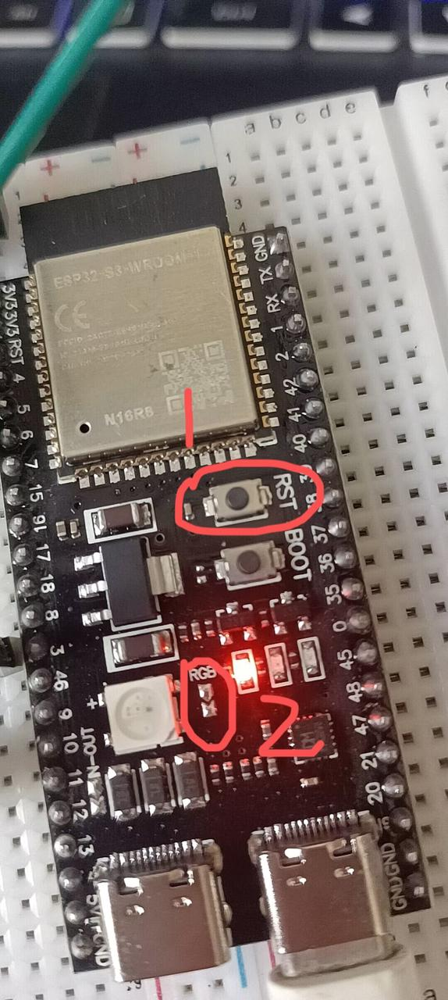
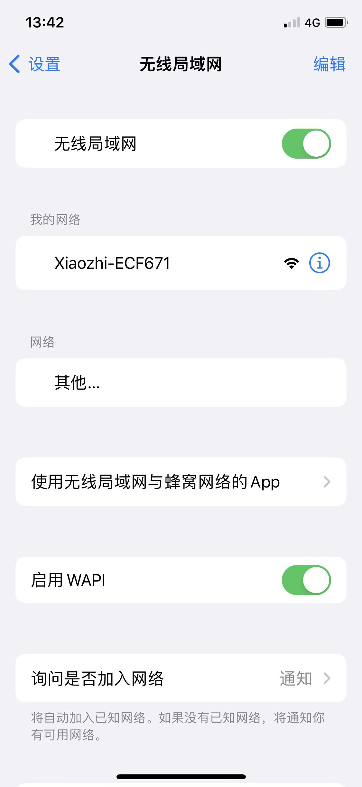
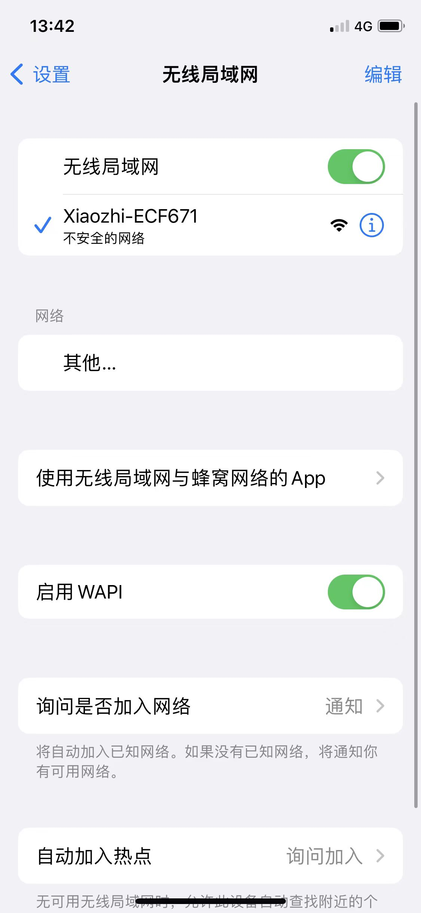
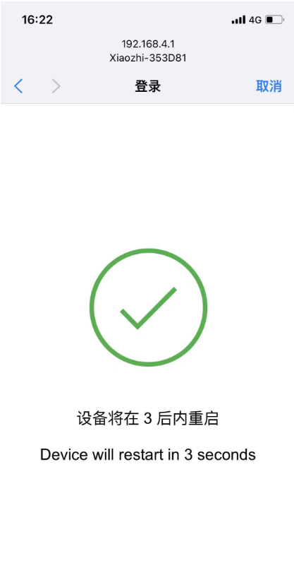
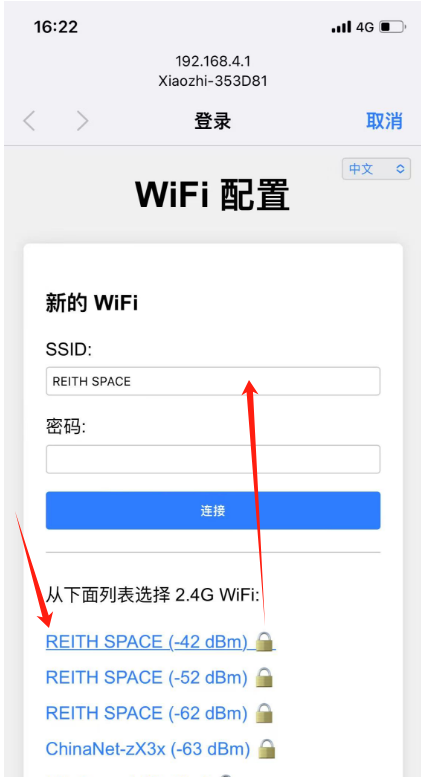
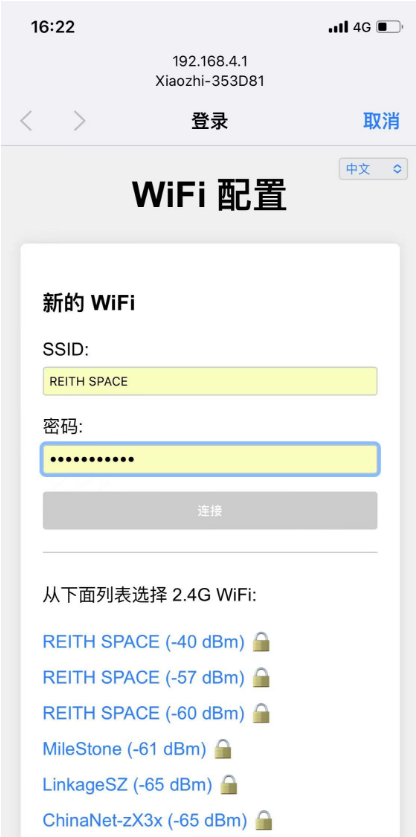
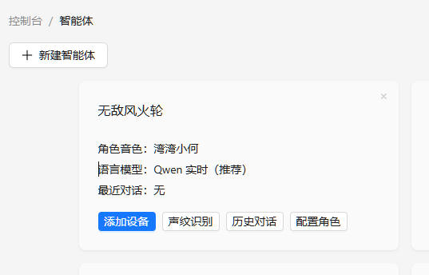
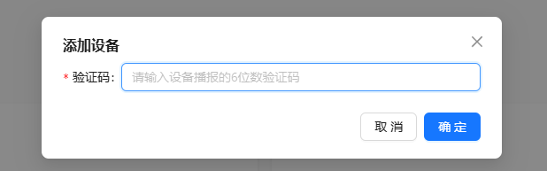
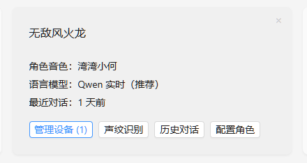
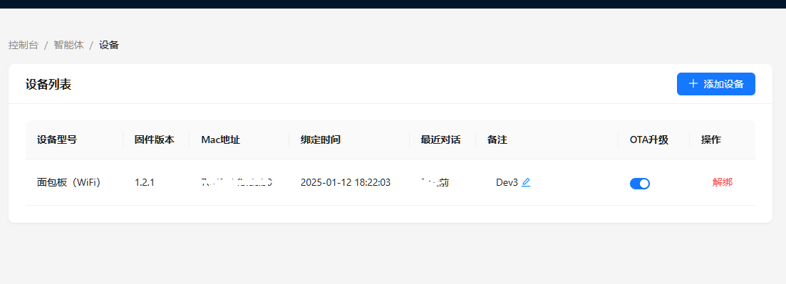

哈喽黄颖！👋
这份生日礼物还在沉睡中... 动动手指，照着下面的"通关秘籍"走，几分钟就能唤醒你的小智伙伴啦！🎂
让小智连上世界的网线 🌐
必经之路1
连接电源
将 Type-C 数据线插入小智芯片的接口，另一端连接电源适配器（或电脑 USB 口）。
注意： 通电后看到板子上亮起灯光即表示供电正常。
2
确认配网状态
观察开发板上的 RGB 彩灯。如果是蓝色匀速闪烁，说明设备已进入配网模式。
3
连接热点
打开手机 Wi-Fi 设置，找到并连接名称为 "Xiaozhi-xxx" 的热点（无密码）。


注：如果找不到热点，请参考"信号问题"部分。
4
配置网络
连接热点后通常会自动弹出配置页。如果没有弹出，请在浏览器输入 192.168.4.1 。
 点击 "Configure WiFi"，选择您家的 Wi-Fi 并输入密码保存。
配置成功状态
2. 绑定设备 ID
在智能体模块上点击"添加设备"，输入提示语中告知的 6位数字设备 ID，点击确认即可激活。
多设备管理
一个小智 AI 智能体可以在多个设备终端中连接使用（这个可以不用管，玩一下就好），它们将共用同一个记忆体和配置。
如需添加更多设备，请点击智能体模块下方的 "设备管理" → "+添加设备"。



小智怎么闹脾气了？🤔
点击下方看看是不是这些原因
可能是天线有点"社恐"，信号不太好。试试这个魔法：
- 线圈法（推荐）： 用软导线在天线那儿绕 3 圈，给它加个 buff。
- 贴贴法： 把板子贴近路由器和手机，越近越好。
- 手指法： 临时用手指摸摸天线位置，借你一点灵力。
| 灯光秀 | 翻译 |
|---|---|
| 蓝灯狂闪 | "快给我配网！" |
| → | "连上啦，随时待命！" |
| 蓝灯长亮 | "正在进化中...（升级固件，千万别断电！）" |
| 语音后蓝灯 | "让我想想..."（连服务器中） |
| 绿灯亮 | "我在说话呢" |
| 红灯亮 | "我在听你说~"（录音中） |